Piezas de carrocería para KIA Sportage
81 piezas disponibles hoy para KIA Sportage, cada una con su foto y su código: lámparas traseras (10), covers de halógena (8), flares (6), marcos de radiador (6). Dinos el año de tu carro y te confirmamos si le sirve.
- Garantía de 3 días
- Foto real de cada pieza
- Efectivo, Yappy o ACH
- Lunes a sábado, 8:00 a. m. a 5:00 p. m.
Lámparas traseras para KIA Sportage 10
 264Sportage2016-18 · lado izquierdo · original
264Sportage2016-18 · lado izquierdo · original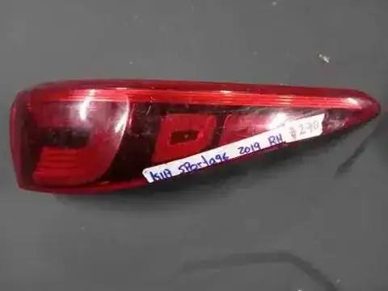
270Sportage2019-21 · lado derecho · original 272Sportage2025-26 · lado derecho · original
272Sportage2025-26 · lado derecho · original 281Sportage2011-13 · lado derecho · original
281Sportage2011-13 · lado derecho · original 287Sportage2014-2017 · lado derecho · original
287Sportage2014-2017 · lado derecho · original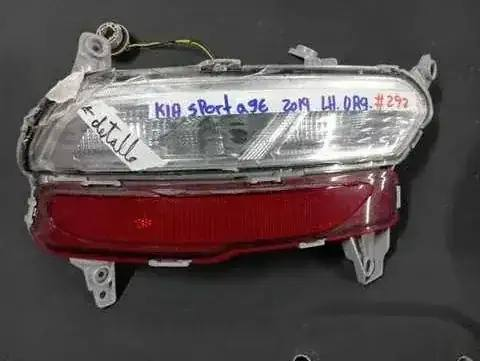
292Sportage2019-21 · lado izquierdo · original 293Sportage2019-21 · lado izquierdo · original
293Sportage2019-21 · lado izquierdo · original 298Sportage2019-21 · lado izquierdo · original
298Sportage2019-21 · lado izquierdo · original 303Sportage2019-21 · lado izquierdo · original
303Sportage2019-21 · lado izquierdo · original LT003Sportage2019-21 · original
LT003Sportage2019-21 · originalCovers de halógena para KIA Sportage 8
 CH039Sportage2016-18 · lado izquierdo · original
CH039Sportage2016-18 · lado izquierdo · original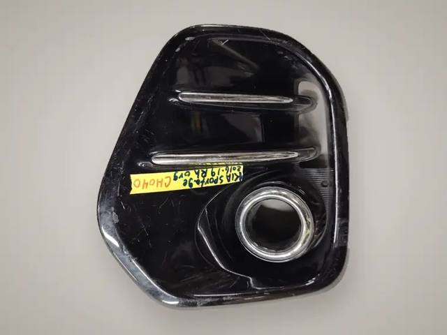
CH040Sportage2016-19 · lado derecho · original CH049Sportage2020-22 · lado derecho · original
CH049Sportage2020-22 · lado derecho · original CH050Sportage2020-22 · lado izquierdo · original
CH050Sportage2020-22 · lado izquierdo · original CH051Sportage2020-22 · lado derecho · original
CH051Sportage2020-22 · lado derecho · original CH052Sportage2020-22 · lado izquierdo · original
CH052Sportage2020-22 · lado izquierdo · original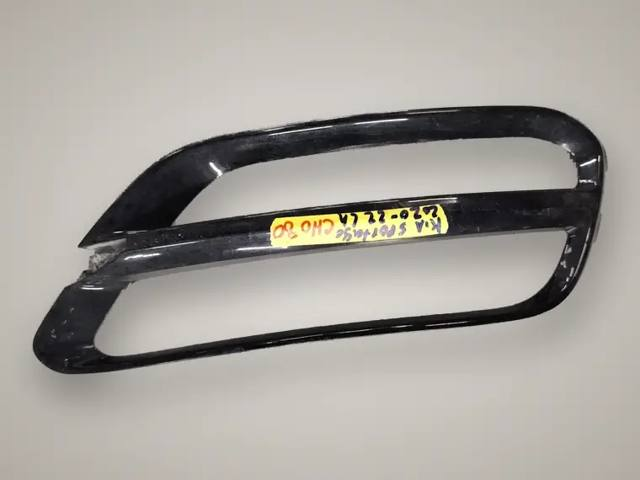
CH080Sportage2020-22 · lado izquierdo CH140Sportage2016-18 · lado derecho · original
CH140Sportage2016-18 · lado derecho · originalFlares para KIA Sportage 6
 FL049Sportage2021-24 · lado derecho · original
FL049Sportage2021-24 · lado derecho · original FL056Sportage2022-24 · lado izquierdo · original
FL056Sportage2022-24 · lado izquierdo · original FL070Sportage2016-20 · lado derecho · original
FL070Sportage2016-20 · lado derecho · original FL097Sportage2025-26 · lado izquierdo · original
FL097Sportage2025-26 · lado izquierdo · original FL152Sportage2017-22 · lado izquierdo · original
FL152Sportage2017-22 · lado izquierdo · original FL153Sportage2017-22 · lado izquierdo · original
FL153Sportage2017-22 · lado izquierdo · originalMarcos de radiador para KIA Sportage 6
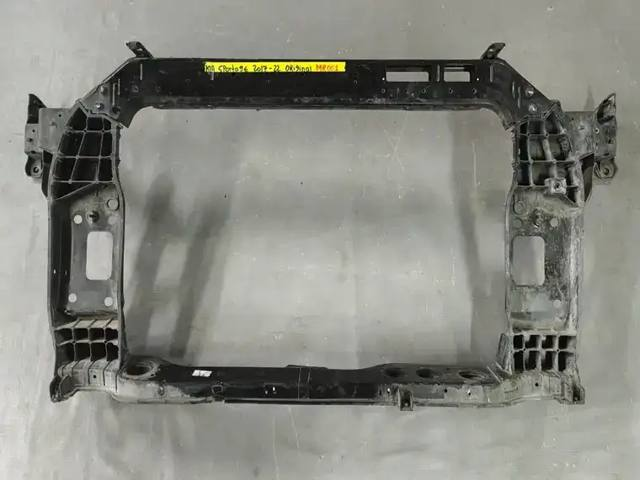
MR001Sportage2017-22 · original MR003Sportage2011-16 · original
MR003Sportage2011-16 · original MR050Sportage2000-05 · original
MR050Sportage2000-05 · original MR051Sportage2000-05 · original
MR051Sportage2000-05 · original MR052Sportage2000-08 · original
MR052Sportage2000-08 · original MR056Sportage2000-03 · original
MR056Sportage2000-03 · originalHalógenas y faros antiniebla para KIA Sportage 6
 HA011Sportage2011-16 · lado derecho
HA011Sportage2011-16 · lado derecho HA017Sportage2011-13 · lado derecho
HA017Sportage2011-13 · lado derecho HA018Sportage2011-16 · lado izquierdo
HA018Sportage2011-16 · lado izquierdo HA012Sportage2011-16 · lado izquierdo
HA012Sportage2011-16 · lado izquierdo HA040Sportage2007-10 · lado izquierdo · nuevo
HA040Sportage2007-10 · lado izquierdo · nuevo HA041Sportage2007-10 · lado derecho · nuevo
HA041Sportage2007-10 · lado derecho · nuevoParrillas para KIA Sportage 5
 387Sportage2016-18 · original
387Sportage2016-18 · original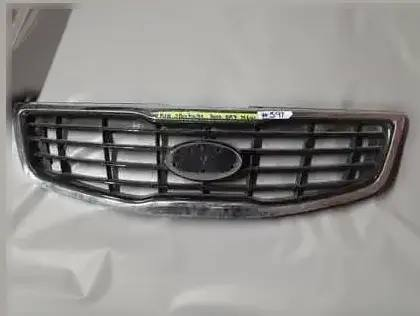
391Sportage2014-15 · original nuevo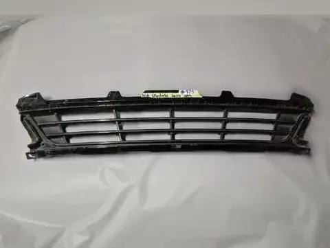
413Sportage2022-24 · original 419Sportage2014-15 · original nuevo
419Sportage2014-15 · original nuevo 422Sportage2016-18 · original nuevo
422Sportage2016-18 · original nuevoPuertas para KIA Sportage 5
 PT008Sportage2022-26 · lado derecho · original
PT008Sportage2022-26 · lado derecho · original PT009Sportage2022-26 · lado derecho · original
PT009Sportage2022-26 · lado derecho · original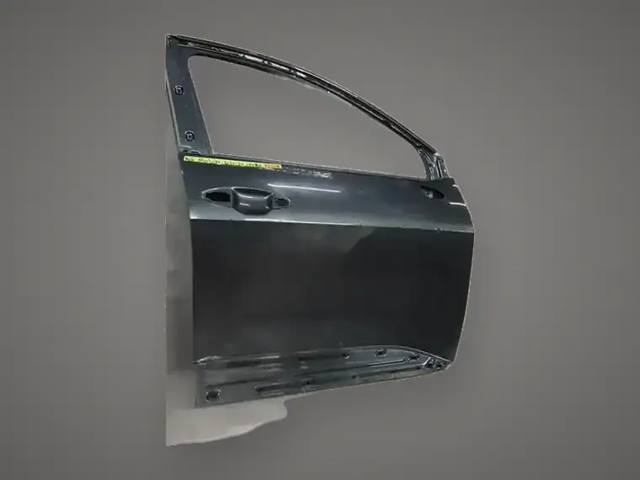
PD004Sportage2022-26 · lado derecho · original PD005Sportage2022-26 · lado derecho · original
PD005Sportage2022-26 · lado derecho · original PT016Sportage2022-26 · lado izquierdo · original
PT016Sportage2022-26 · lado izquierdo · originalDefensas delanteras para KIA Sportage 3
 803Sportage
803Sportage 804Sportage
804Sportage 805Sportage
805SportageCubrepolvos para KIA Sportage 3
 CP001Sportage2014-20 · lado derecho · genérico
CP001Sportage2014-20 · lado derecho · genérico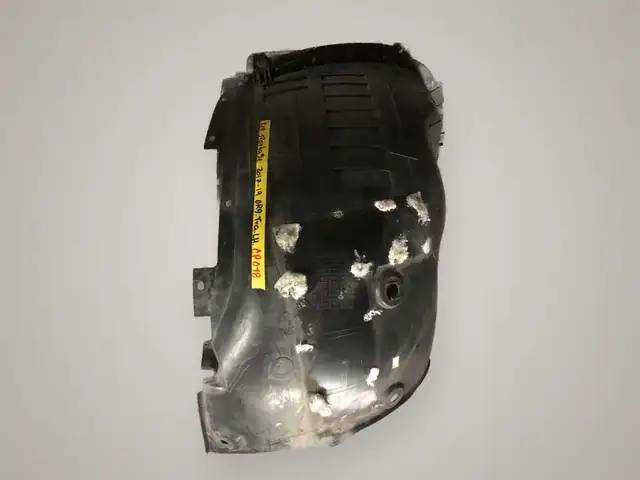
CP018Sportage2016-21 · lado izquierdo · original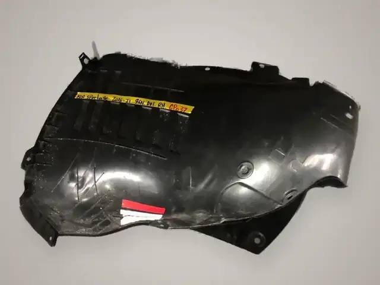
CP037Sportage2016-21 · lado derecho · genéricoDefensas traseras para KIA Sportage 3
 DT070Sportage2020-22 · original
DT070Sportage2020-22 · original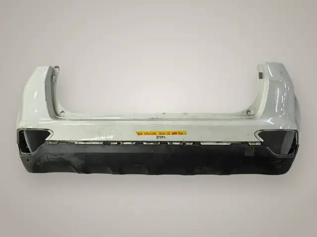
DT072Sportage2020-22 · original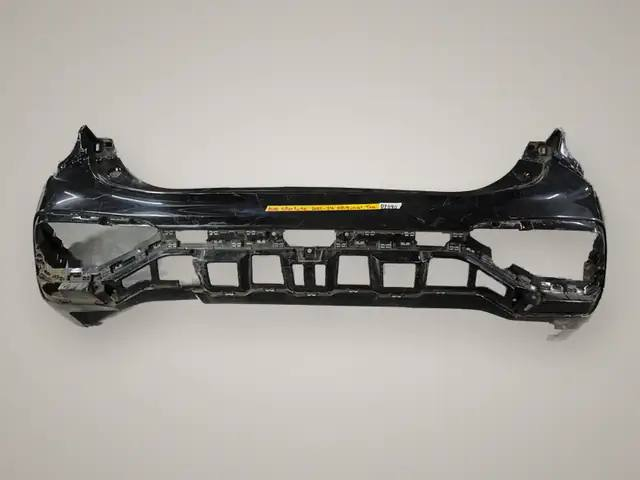
DT090Sportage2022-24 · originalGuardafangos para KIA Sportage 3
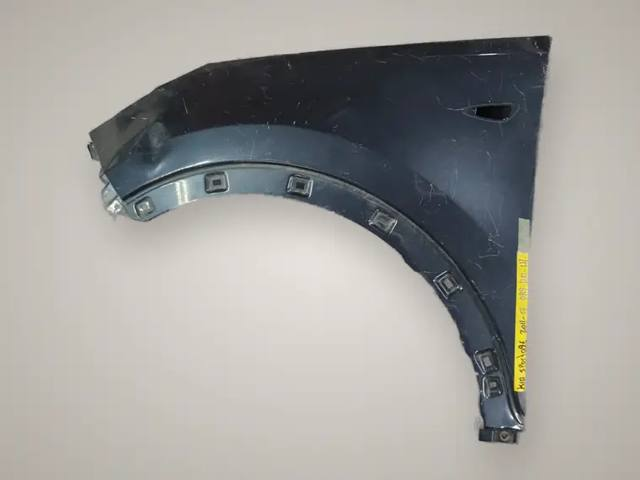
GF046Sportage2011-2017 · lado izquierdo · original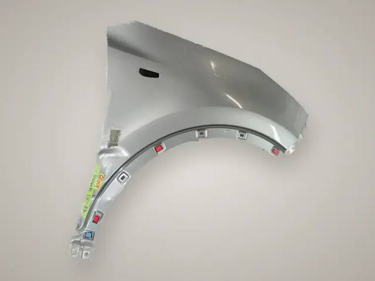
GF059Sportage2018-2022 · lado derecho GF061Sportage2023-2025 · lado derecho · original
GF061Sportage2023-2025 · lado derecho · originalDefensas delanteras inferiores para KIA Sportage 3
 DDI010Sportage2011-16 · original
DDI010Sportage2011-16 · original DDI013Sportage2011-16 · original
DDI013Sportage2011-16 · original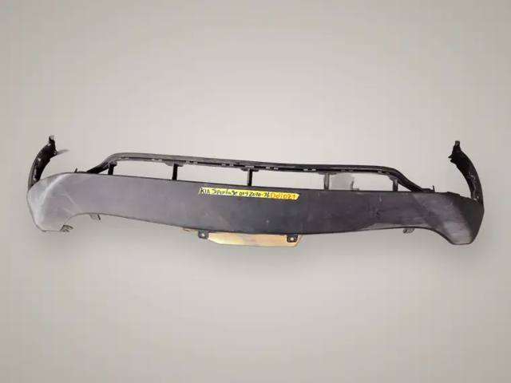
DDI021Sportage2011-16 · originalExtensiones de defensa trasera para KIA Sportage 3
 EDT003Sportage2011-17 · lado izquierdo · original
EDT003Sportage2011-17 · lado izquierdo · original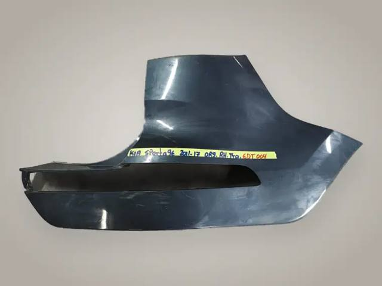
EDT004Sportage2011-17 · lado derecho · original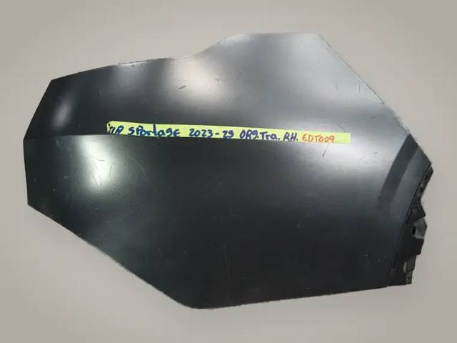
EDT009Sportage2023-25 · lado derecho · originalRefuerzos delanteros para KIA Sportage 3
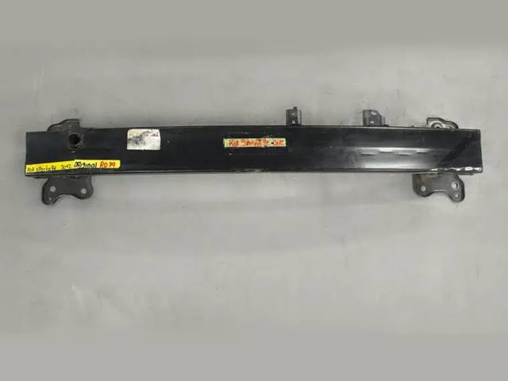
R039Sportage2011-16 · original nuevo R042Sportage2011-16 · original
R042Sportage2011-16 · original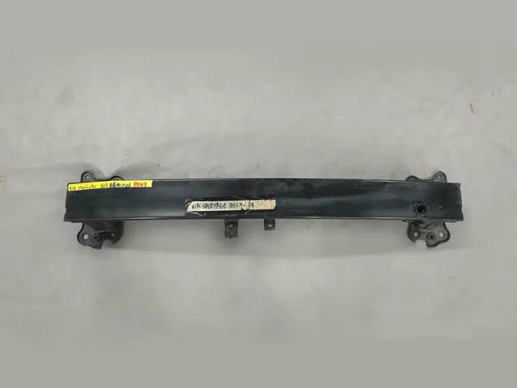
R043Sportage2017-21 · originalTapas superiores de radiador para KIA Sportage 3
 TA005Sportage2016 · original nuevo
TA005Sportage2016 · original nuevo TA013Sportage2016-20 · original nuevo
TA013Sportage2016-20 · original nuevo TA014Sportage2010-16 · original
TA014Sportage2010-16 · original 010Sportage
010Sportage 012Sportage
012Sportage RB008Sportage
RB008Sportage RB020Sportage
RB020Sportage DTI005Sportage
DTI005Sportage VA023Sportage
VA023Sportage TM038Sportage
TM038Sportage TB047Sportage
TB047Sportage R086Sportage
R086Sportage